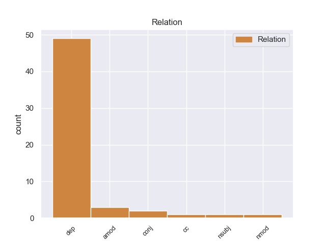
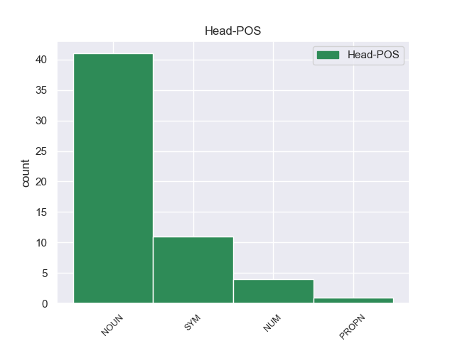
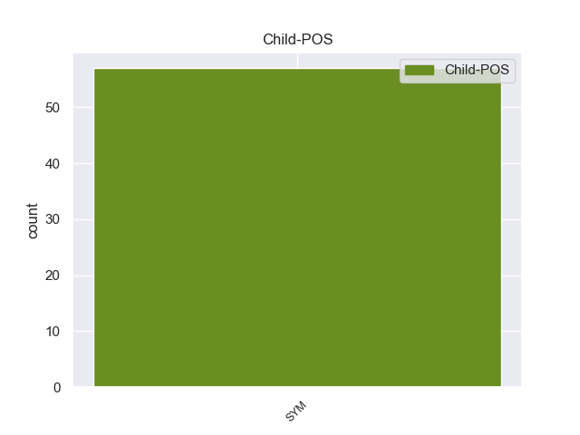

Distribution of features within this leaf



Morphosyntax Rules sorted by frequency.
When the dependent token is None, the Person needs to be 2.
1 Según _ _ _ _ 0 _ _ _
2 la _ _ _ _ 0 _ _ _
3 Oficina _ _ _ _ 0 _ _ _
4 de _ _ _ _ 0 _ _ _
5 el _ _ _ _ 0 _ _ _
6 Censo _ _ _ _ 0 _ _ _
7 de _ _ _ _ 0 _ _ _
8 los _ _ _ _ 0 _ _ _
9 Estados _ _ _ _ 0 _ _ _
10 Unidos _ _ _ _ 0 _ _ _
11 , _ _ _ _ 0 _ _ _
12 el _ _ _ _ 0 _ _ _
13 municipio _ _ _ _ 0 _ _ _
14 tiene _ _ _ _ 0 _ _ _
15 una _ _ _ _ 0 _ _ _
16 superficie _ _ _ _ 0 _ _ _
17 total _ _ _ _ 0 _ _ _
18 de _ _ _ _ 0 _ _ _
19 0.99 _ _ _ _ 0 _ _ _
20 km _ _ _ _ 0 _ _ _
21 ² _ _ _ _ 0 _ _ _
22 , _ _ _ _ 0 _ _ _
23 de _ _ _ _ 0 _ _ _
24 la _ _ _ _ 0 _ _ _
25 cual _ _ _ _ 0 _ _ _
26 0.99 _ _ _ _ 0 _ _ _
27 km _ _ _ _ 0 _ _ _
28 ² _ _ _ _ 0 _ _ _
29 corresponden _ _ _ _ 0 _ _ _
30 a _ _ _ _ 0 _ _ _
31 tierra _ _ _ _ 0 _ _ _
32 firme _ _ _ _ 0 _ _ _
33 y _ _ _ _ 0 _ _ _
34 ( _ _ _ _ 0 _ _ _
35 0 _ _ _ _ 0 _ _ _
36 % _ _ _ _ 0 _ _ _
37 ) _ _ _ _ 0 _ _ _
38 0 _ _ _ _ 0 _ _ _
39 km km NOUN _ _ 0 _ _ _
40 ² ² SYM _ Number=Sing|Person=2 39 dep _ _
41 es _ _ _ _ 0 _ _ _
42 agua _ _ _ _ 0 _ _ _
43 . _ _ _ _ 0 _ _ _
non-conforming Examples:
1 Existen _ _ _ _ 0 _ _ _
2 363 _ _ _ _ 0 _ _ _
3 km _ _ _ _ 0 _ _ _
4 ² _ _ _ _ 0 _ _ _
5 de _ _ _ _ 0 _ _ _
6 huertas _ _ _ _ 0 _ _ _
7 y _ _ _ _ 0 _ _ _
8 216 _ _ _ _ 0 _ _ _
9 km km NOUN _ Gender=Masc|Number=Plur 0 _ _ _
10 ² ² SYM _ Number=Sing|Person=3 9 dep _ _
11 de _ _ _ _ 0 _ _ _
12 viñedos _ _ _ _ 0 _ _ _
13 . _ _ _ _ 0 _ _ _
1 Llegó _ _ _ _ 0 _ _ _
2 a _ _ _ _ 0 _ _ _
3 el _ _ _ _ 0 _ _ _
4 número _ _ _ _ 0 _ _ _
5 uno _ _ _ _ 0 _ _ _
6 en _ _ _ _ 0 _ _ _
7 los _ _ _ _ 0 _ _ _
8 charts _ _ _ _ 0 _ _ _
9 de _ _ _ _ 0 _ _ _
10 Australia _ _ _ _ 0 _ _ _
11 por _ _ _ _ 0 _ _ _
12 cuatro _ _ _ _ 0 _ _ _
13 semanas _ _ _ _ 0 _ _ _
14 en _ _ _ _ 0 _ _ _
15 marzo _ _ _ _ 0 _ _ _
16 de _ _ _ _ 0 _ _ _
17 el _ _ _ _ 0 _ _ _
18 2006 _ _ _ _ 0 _ _ _
19 , _ _ _ _ 0 _ _ _
20 fue _ _ _ _ 0 _ _ _
21 el _ _ _ _ 0 _ _ _
22 25 25 NUM _ NumType=Card 0 _ _ _
23 º º SYM _ Number=Sing|Person=3 22 dep _ _
24 álbum _ _ _ _ 0 _ _ _
25 más _ _ _ _ 0 _ _ _
26 vendido _ _ _ _ 0 _ _ _
27 en _ _ _ _ 0 _ _ _
28 Australia _ _ _ _ 0 _ _ _
29 . _ _ _ _ 0 _ _ _
1 El _ _ _ _ 0 _ _ _
2 21 _ _ _ _ 0 _ _ _
3 de _ _ _ _ 0 _ _ _
4 octubre _ _ _ _ 0 _ _ _
5 , _ _ _ _ 0 _ _ _
6 entraron _ _ _ _ 0 _ _ _
7 a _ _ _ _ 0 _ _ _
8 formar _ _ _ _ 0 _ _ _
9 parte _ _ _ _ 0 _ _ _
10 de _ _ _ _ 0 _ _ _
11 el _ _ _ _ 0 _ _ _
12 torneo _ _ _ _ 0 _ _ _
13 2012 _ _ _ _ 0 _ _ _
14 Super _ _ _ _ 0 _ _ _
15 Jr. _ _ _ _ 0 _ _ _
16 Tag _ _ _ _ 0 _ _ _
17 Tournament _ _ _ _ 0 _ _ _
18 , _ _ _ _ 0 _ _ _
19 derrotando _ _ _ _ 0 _ _ _
20 a _ _ _ _ 0 _ _ _
21 Jushin _ _ _ _ 0 _ _ _
22 Liger _ _ _ _ 0 _ _ _
23 & & SYM _ Number=Sing|Person=3 24 cc _ _
24 Tiger tiger PROPN _ _ 0 _ _ _
25 Mask _ _ _ _ 0 _ _ _
26 IV _ _ _ _ 0 _ _ _
27 en _ _ _ _ 0 _ _ _
28 la _ _ _ _ 0 _ _ _
29 primera _ _ _ _ 0 _ _ _
30 ronda _ _ _ _ 0 _ _ _
31 , _ _ _ _ 0 _ _ _
32 pero _ _ _ _ 0 _ _ _
33 perdiendo _ _ _ _ 0 _ _ _
34 el _ _ _ _ 0 _ _ _
35 2 _ _ _ _ 0 _ _ _
36 de _ _ _ _ 0 _ _ _
37 noviembre _ _ _ _ 0 _ _ _
38 ante _ _ _ _ 0 _ _ _
39 Apollo _ _ _ _ 0 _ _ _
40 55 _ _ _ _ 0 _ _ _
41 ( _ _ _ _ 0 _ _ _
42 Prince _ _ _ _ 0 _ _ _
43 Devitt _ _ _ _ 0 _ _ _
44 and _ _ _ _ 0 _ _ _
45 Ryusuke _ _ _ _ 0 _ _ _
46 Taguchi _ _ _ _ 0 _ _ _
47 ) _ _ _ _ 0 _ _ _
48 . _ _ _ _ 0 _ _ _
1 Los _ _ _ _ 0 _ _ _
2 trajes _ _ _ _ 0 _ _ _
3 de _ _ _ _ 0 _ _ _
4 Lucas _ _ _ _ 0 _ _ _
5 Gerardo _ _ _ _ 0 _ _ _
6 Dillon _ _ _ _ 0 _ _ _
7 , _ _ _ _ 0 _ _ _
8 4to _ _ _ _ 0 _ _ _
9 Barón _ _ _ _ 0 _ _ _
10 Clonbrock _ _ _ _ 0 _ _ _
11 , _ _ _ _ 0 _ _ _
12 el _ _ _ _ 0 _ _ _
13 122 122 NUM _ NumType=Card 0 _ _ _
14 º º SYM _ Number=Sing|Person=3 13 dep _ _
15 Caballero _ _ _ _ 0 _ _ _
16 de _ _ _ _ 0 _ _ _
17 la _ _ _ _ 0 _ _ _
18 Orden _ _ _ _ 0 _ _ _
19 , _ _ _ _ 0 _ _ _
20 están _ _ _ _ 0 _ _ _
21 expuestos _ _ _ _ 0 _ _ _
22 en _ _ _ _ 0 _ _ _
23 el _ _ _ _ 0 _ _ _
24 Museo _ _ _ _ 0 _ _ _
25 Nacional _ _ _ _ 0 _ _ _
26 de _ _ _ _ 0 _ _ _
27 Irlanda _ _ _ _ 0 _ _ _
28 , _ _ _ _ 0 _ _ _
29 en _ _ _ _ 0 _ _ _
30 Dublín _ _ _ _ 0 _ _ _
31 ; _ _ _ _ 0 _ _ _
1 La _ _ _ _ 0 _ _ _
2 temporada _ _ _ _ 0 _ _ _
3 2007-08 _ _ _ _ 0 _ _ _
4 jugará _ _ _ _ 0 _ _ _
5 su _ _ _ _ 0 _ _ _
6 27 27 NUM _ NumType=Card 0 _ _ _
7 ª ª SYM _ Number=Sing|Person=3 6 dep _ _
8 temporada _ _ _ _ 0 _ _ _
9 consecutiva _ _ _ _ 0 _ _ _
10 en _ _ _ _ 0 _ _ _
11 la _ _ _ _ 0 _ _ _
12 categoría _ _ _ _ 0 _ _ _
13 . _ _ _ _ 0 _ _ _